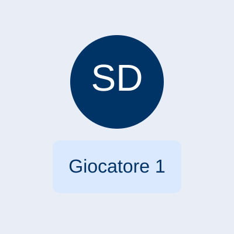
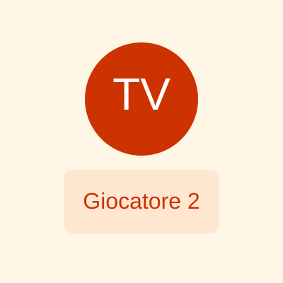
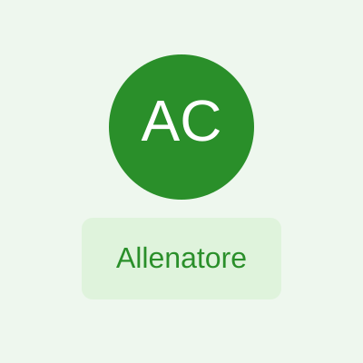

Benvenuti nel sito ufficiale della società calcistica San Donato Tavarnelle, una realtà sportiva che rappresenta con orgoglio il territorio di San Donato in Poggio e Tavarnelle Val di Pesa.
La Squadra
Di seguito la rosa e lo staff per la stagione in corso. Per ogni membro trovi nome, ruolo e una breve nota.



Rosa principale
| # | Nome | Ruolo | Nota |
|---|---|---|---|
| 1 | Luca Bianchi | Portiere | Esperienza e riflessi pronti, capitano della squadra. |
| 2 | Marco Rossi | Difensore | Giocatore solido, specialista nei contrasti. |
| 8 | Andrea Lombardi | Centrocampista | Creatore di gioco, buona visione. |
| 10 | Francesco Neri | Attaccante | Finalizzatore, capocannoniere della stagione scorsa. |
Staff tecnico
- Allenatore: Alessandro Conti — Tecnico con esperienza nel settore giovanile.
- Vice Allenatore: Paolo Ferri — Preparatore tattico e mentale.
- Direttore Sportivo: Giovanna Verdi — Gestione settore giovanile e scouting.
Se vuoi che inserisca la rosa completa, foto dei giocatori o link ai profili social, dimmelo e provvedo ad aggiungerli.
Chi siamo
Fondata dalla passione per il calcio e la comunità, la società San Donato Tavarnelle si impegna a promuovere i valori dello sport, della lealtà e della crescita dei giovani atleti. Partecipiamo ai principali campionati dilettantistici e giovanili, offrendo un ambiente sano e stimolante per tutti gli appassionati.
Contatti
Email: info@sanddonatotavarnelle.it
Indirizzo: Via dello Sport, 1, 50028 Tavarnelle Val di Pesa (FI)